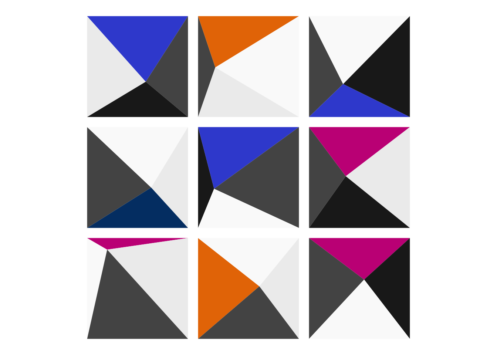

Steal like a generative artist
R
Generative Art
Events
A first forray into generative art
Scoping the project
The parameters set by the user for this artwork would likely include: the number of rows and columns of “pyramids”, the four colours to be used or the sides of the pyramids and perhaps the spacing between the pyramids relative to their base size.
The randomness seems to come from the location of the “apex” of each square-based pyramid and the order in which the four face colours are applied.
The rules are the additional structure that stays the same between each generation. This might be things like the spacing between the pyramids, how close the apex can get to the edge of each square and that each face colour must appears exactly once on every pyramid.
My modifications to this will be to allow the user to specify two sets of colour inputs, one set of neutral colours and one set of accent colours. Each pyramid will get three neutral sides and one accent side.
Keep It Simple, Stupid
I’ve used R to plot polygons quite a few times before but usually in the context of something like adding a credible region around a function estimate or to show the outline of a geographic region. In both cases that’s a either a single or small number of polygons where each has very many sides. What I need here is the exact opposite of that: a large number of polygons, each with a small number of sides (three to b e exact).
Before worrying about any of that though, there are a few parameters that I can set up-front, for example I can set a colour scheme that is aligned with my usual styling.
library(zvplot)
neutrals = c(zv_black, zv_white, zv_light_grey, zv_mid_grey)
accents = c(zv_navy, zv_orange, zv_fuchia, zv_blue)Let’s start with the smallest example possible where I will be able to tell that everything is working as it should, a 2x3 grid.
n_rows = 2
n_cols = 3To make this easier on myself I’m going to start off just trying to generate the squares that will form the base of each pyramid. To make finding coordinates slightly easier, I’ll use a coordinate system where each square is 1 units. That will also make the parameter controlling the gap between pyramids easier to interpret.
gap_size = 0.1I will be using {ggplot2} to make the plot, so I’ll need to organise the coordinates of my polygon corners into a data frame. As a first step, I’ll making a data frame that indexes and describes each of the squares I will need to plot.
n_squares <- n_rows * n_cols
square_id <- seq_len(n_squares)
row_num <- rep(1:n_rows, each = n_cols)
col_num <- rep(1:n_cols, times = n_rows)
squares <- data.frame(id = square_id, row_num, col_num)
squares id row_num col_num
1 1 1 1
2 2 1 2
3 3 1 3
4 4 2 1
5 5 2 2
6 6 2 3I can then add in the coordinates of each corner as new columns
squares$x_min <- (1 + gap_size) * (squares$col_num - 1) + gap_size
squares$y_min <- (1 + gap_size) * (squares$row_num - 1) + gap_size
squares$x_max <- squares$x_min + 1
squares$y_max <- squares$y_min + 1
squares id row_num col_num x_min y_min x_max y_max
1 1 1 1 0.1 0.1 1.1 1.1
2 2 1 2 1.2 0.1 2.2 1.1
3 3 1 3 2.3 0.1 3.3 1.1
4 4 2 1 0.1 1.2 1.1 2.2
5 5 2 2 1.2 1.2 2.2 2.2
6 6 2 3 2.3 1.2 3.3 2.2Looking at the examples from the geom_poly() documentation, I’ll need the x- and y-coordinates for each vertex of every square in two separate vectors and an id vector that links each vertex (row) to it’s specific polygon. As with polygon() in base R, it seems like polygons should be specified anti-clockwise.
After a bit of head scratching, the most natural (but probably not most efficient) approach to me would be to interleave the bottom-left, bottom-right, top-right and top-left coordinates of each square that we just generated. The {vctrs} package has a helpful function to do this, which works for two or more vector-like objects of the same type.
library(vctrs)
vec_interleave(as.character(1:5), letters[1:5]) [1] "1" "a" "2" "b" "3" "c" "4" "d" "5" "e"vec_interleave(as.character(1:5), letters[1:5], LETTERS[1:5]) [1] "1" "a" "A" "2" "b" "B" "3" "c" "C" "4" "d" "D" "5" "e" "E"Taking care to specify the coordinates in the right order, we can construct a dataframe that contains all the information needed to create the simplified plot.
id <- rep(squares$id, each = 4)
x <- vec_interleave(squares$x_min, squares$x_max, squares$x_max, squares$x_min)
y <- vec_interleave(squares$y_min, squares$y_min, squares$y_max, squares$y_max)
value <- sample(x = c(neutrals, accents), size = n_squares)
value <- rep(value, each = 4)
plotting <- data.frame(id, x, y, value)
head(plotting) id x y value
1 1 0.1 0.1 #3D52D5
2 1 1.1 0.1 #3D52D5
3 1 1.1 1.1 #3D52D5
4 1 0.1 1.1 #3D52D5
5 2 1.2 0.1 #202020
6 2 2.2 0.1 #202020That is all the up-front work done, we should now have everything we need to get our minimal working example up and running. The code to create the plot itself is remarkably simple.
library(ggplot2)
ggplot(plotting, aes(x = x, y = y)) +
geom_polygon(aes(group = id), fill = value) +
coord_equal() +
theme_void()
Add a little more complexity
It’s great that the simple square version works but it’s not particularly exciting. Let’s add in the second random aspect, the location of the apex or peak of each pyramid. To do this I’ll add the x- and y-coordinates of that peak as a column in the squares data frame.
When generating peak locations, I could locate them uniformly at random over the unit square. One issue with this approach is that it might cause ugly realisations where the peak is very close to one of the edges. There are lots of ways to avoid this but I’ll keep it simple again and add a buffer zone that keeps the peak away from the edges.
buffer = 0.1
squares$peak_x <- runif(
n = n_squares,
min = squares$x_min + buffer,
max = squares$x_max - buffer)
squares$peak_y <- runif(
n = n_squares,
min = squares$y_min + buffer,
max = squares$y_max - buffer)
squares id row_num col_num x_min y_min x_max y_max peak_x peak_y
1 1 1 1 0.1 0.1 1.1 1.1 0.4442918 0.3409578
2 2 1 2 1.2 0.1 2.2 1.1 1.7946610 0.2581493
3 3 1 3 2.3 0.1 3.3 1.1 3.0101058 0.6435676
4 4 2 1 0.1 1.2 1.1 2.2 0.7543079 1.4341315
5 5 2 2 1.2 1.2 2.2 2.2 1.9005211 1.5990998
6 6 2 3 2.3 1.2 3.3 2.2 2.8278091 1.5572086Our logic and variables are all in place to make the more complicated pyramid plot. It’s exactly the same idea as before but with 24 triangles rather than 6 squares.
id <- rep(1:(n_squares * 4), each = 3)
x <- vec_interleave(squares$x_min, squares$peak_x, squares$x_min,
squares$x_min, squares$peak_x, squares$x_max,
squares$x_max, squares$x_max, squares$peak_x,
squares$x_max, squares$x_min, squares$peak_x)
y <- vec_interleave(squares$y_min, squares$peak_y, squares$y_max,
squares$y_max, squares$peak_y, squares$y_max,
squares$y_max, squares$y_min, squares$peak_y,
squares$y_min, squares$y_min, squares$peak_y)
value <- c()
for (i in 1:n_squares) {
colours <- c(sample(neutrals, 3), sample(accents, 1)) # pick colours
colours <- sample(colours, 4) # shuffle
value <- c(value, colours) # record
}
value <- rep(value, each = 3) # colour value for every vertex of every triangle
plotting <- data.frame(id, x, y, value)
head(plotting) id x y value
1 1 0.1000000 0.1000000 #EEEEEE
2 1 0.4442918 0.3409578 #EEEEEE
3 1 0.1000000 1.1000000 #EEEEEE
4 2 0.1000000 1.1000000 #003E74
5 2 0.4442918 0.3409578 #003E74
6 2 1.1000000 1.1000000 #003E74Since we set everything up in the same way, we can use the same simple code to plot our pyramids as we did for the squares.
ggplot(plotting, aes(x = x, y = y)) +
geom_polygon(aes(group = id), fill = value) +
coord_equal() +
theme_void()Make it a function
Okay, we have made one version of the artwork, but the joy of generative art is being able to easily get many realisations of the same artwork and to experiment with different parameter values.
We can make that a lot easier to do by consolidating the code above into a function.
pyramids <- function(n_rows = 5, n_cols = 10, gap_size = 0.1, buffer = 0.1, neutrals = NULL, accents = NULL){
# set palette if not defined by the user
if (is.null(neutrals)) {
neutrals <- c("#202020", "#FAFAFA", "#EEEEEE", "#555555")
}
if (is.null(accents)) {
accents <- c("#003E74", "#E87800", "#C81E87", "#3D52D5")
}
# define square bases of pyramids
n_squares <- n_rows * n_cols
square_id <- seq_len(n_squares)
row_num <- rep(1:n_rows, each = n_cols)
col_num <- rep(1:n_cols, times = n_rows)
squares <- data.frame(id = square_id, row_num, col_num)
# add columns for coordinates
squares$x_min <- (1 + gap_size) * (squares$col_num - 1) + gap_size
squares$y_min <- (1 + gap_size) * (squares$row_num - 1) + gap_size
squares$x_max <- squares$x_min + 1
squares$y_max <- squares$y_min + 1
squares$peak_x <- runif(n_squares, squares$x_min + buffer, squares$x_max - buffer)
squares$peak_y <- runif(n_squares, squares$y_min + buffer, squares$y_max - buffer)
# create dataframe of polygons
id <- rep(x = 1:(n_squares * 4), each = 3)
x <- vec_interleave(squares$x_min, squares$peak_x, squares$x_min,
squares$x_min, squares$peak_x, squares$x_max,
squares$x_max, squares$x_max, squares$peak_x,
squares$x_max, squares$x_min, squares$peak_x)
y <- vec_interleave(squares$y_min, squares$peak_y, squares$y_max,
squares$y_max, squares$peak_y, squares$y_max,
squares$y_max, squares$y_min, squares$peak_y,
squares$y_min, squares$y_min, squares$peak_y)
value <- c()
for (i in 1:n_squares) {
colours <- c(sample(neutrals, 3), sample(accents, 1)) # pick colours
colours <- sample(colours, 4) # shuffle
value <- c(value, colours) #record
}
value <- rep(value, each = 3) # colour value for each vertex of every triangle
plotting <- data.frame(id, x, y, value)
# return plot
ggplot(plotting, aes(x = x, y = y)) +
geom_polygon(aes(group = id), fill = value) +
coord_equal() +
theme_void()
}This lets us check that when we run the function multiple times we get different realisations.
pyramids(n_rows = 3, n_cols = 3)
pyramids(n_rows = 3, n_cols = 3)
pyramids(n_rows = 3, n_cols = 3)


And when we set the same seed, we should be able to recreate a specific version of the artwork.
set.seed(1234)
pyramids(n_rows = 3, n_cols = 3)
set.seed(1234)
pyramids(n_rows = 3, n_cols = 3)
The really fun part is exploring new parameter combinations. Can you figure out which settings I used below?
Try it yourself
If you would like to make your own artwork in this style, you can either copy the code I’ve provided above. Alternatively, you can get started faster by using the packaged versions of the pyramids() function from {zvplot} - there’s a function for the simpler squares design too!
devtools::install_github("zakvarty/zvplot")squares(n_rows = 12, n_cols = 22)
pyramids(n_rows = 2, n_cols = 2)
Session Information
R version 4.3.3 (2024-02-29)
Platform: x86_64-apple-darwin20 (64-bit)
locale: en_US.UTF-8||en_US.UTF-8||en_US.UTF-8||C||en_US.UTF-8||en_US.UTF-8
attached base packages: stats, graphics, grDevices, utils, datasets, methods and base
other attached packages: ggplot2(v.3.5.1), vctrs(v.0.6.5) and zvplot(v.0.0.0.9000)
loaded via a namespace (and not attached): cli(v.3.6.3), knitr(v.1.45), rlang(v.1.1.4), xfun(v.0.43), showtextdb(v.3.0), sysfonts(v.0.8.9), generics(v.0.1.3), jsonlite(v.1.8.8), labeling(v.0.4.3), glue(v.1.8.0), colorspace(v.2.1-1), htmltools(v.0.5.8.1), scales(v.1.3.0), fansi(v.1.0.6), rmarkdown(v.2.26), pander(v.0.6.5), grid(v.4.3.3), evaluate(v.0.23), munsell(v.0.5.1), tibble(v.3.2.1), fastmap(v.1.1.1), yaml(v.2.3.8), lifecycle(v.1.0.4), compiler(v.4.3.3), dplyr(v.1.1.4), Rcpp(v.1.0.12), htmlwidgets(v.1.6.4), pkgconfig(v.2.0.3), rstudioapi(v.0.16.0), farver(v.2.1.2), digest(v.0.6.35), R6(v.2.5.1), tidyselect(v.1.2.1), utf8(v.1.2.4), showtext(v.0.9-7), pillar(v.1.9.0), magrittr(v.2.0.3), withr(v.3.0.1), tools(v.4.3.3) and gtable(v.0.3.5)
Reuse
Citation
BibTeX citation:
@online{varty2024,
author = {Varty, Zak},
title = {Steal Like a Generative Artist},
date = {2024-10-01},
url = {https://www.zakvarty.com/blog/2024-10-01-steal-like-a-generative-artist},
langid = {en}
}
For attribution, please cite this work as:
Varty, Zak. 2024. “Steal Like a Generative Artist.” October
1, 2024. https://www.zakvarty.com/blog/2024-10-01-steal-like-a-generative-artist.